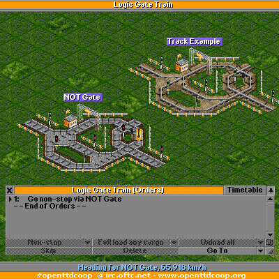
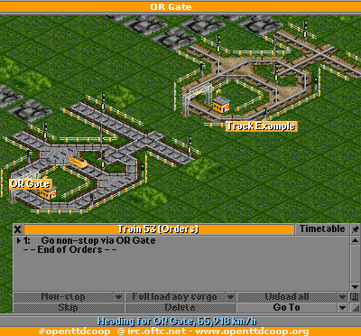

Optimization of Logic – Logic Gates [Part II]
Almost half a year ago I blogged about Logic Gates and already the headline promised that this story is not over yet. Now, I was finally able to concentrate my thoughts about logic gates again and was able to optimize the gates again. As I pointed out earlier the reaction time is too long and gates are reacting too sluggish. The slow processing made the gates only interesting in places which don’t need to be fast. For example the timing of injection. But when it comes to mainlines, sidelines, station entries and many other fancy coop-ish constructions they were more an impediment.
Download Logic Train NewGRF
I hope, this’ll change now, because these new constructions require only one train without any wagons and are extremely small in comparison with the old gates and the once I see nowadays in our games.
The Logic Train
Especially for faster gates Ammler created a NewGrf for me which replaces MagLev “Lev3 Pegasus” with a “Logic Train”. This trains has a max. speed of 65,918km/h and 65,535hp. In fact insanely fast and accelerating from zero to max speed instantly. The optimized gates also function with normal trains but are not as fast as with the Logic Train and sometimes the evil chooser problem occurs. This somehow doesn’t happen with the Logic Trains, but don’t ask me why. Of course you can download the grf file I used. You’ll need it. As far as I know it is also planned to add a NewGrf file to the #openttdcoop NewGrf Package with certain restrictions. In fact, you are not allowed to add wagons to the train. Lets see if that’s possible.
The Not Gate

My new NOT-Gate creation has a size of 3×4 tiles. That’s only three tiles bigger than the smallest circle in which a train can drive. The reaction time is close to zero. The gate requires a logic train and a waypoint. The train needs the waypoint in the order list, otherwise it’ll not work as intended. As you can see the train has to make a choice. The problem we have in normal games, that the signal turns red in the moment the train wants to enter doesn’t occur. I don’t know why, but it just never happened to me, even in long-time tests.
In this video you can see a comparison to other gate types. The important gates has the Waypoint “C”. At the output comparison you can see its the fastest and always showing the opposite of the entering signal.
The Or Gate

The OR-Gate requires the same things as the NOT-Gate. One logic train, a waypoint and an entrance in the order list. The reaction time is close to zero seconds too, you can see how it works in another video I created.
Conclusion
I hope to see some awesome constructions of all the fans of ALUs and logic construction. Since these gates are much smaller and react very fast the possibilities are almost inexhaustible. If you have an awesome construction, post it here, upload it to our wiki or send an email to info [at] openttdcoop.org. I am awaiting your creations.
Categories: Community News, OpenTTD, Tutorial
Ashaw January 19, 2009 19:40
HOw does ont turn off realistic acceleration in the new UI?
Marty January 23, 2009 17:50
By the way, the NOT gate works well in the transfer stations of a self regulating network. Basically, a self-regulating mainline can be used with a long multitrain feeder line if the transfer station uses a NOT gate to only let a train from the mainline in when a feeder line train is unloading. In this case slow response time isn’t a problem since unloading a train takes a lot longer than the gate’s response even with a relatively slow logic engine.
I have a hunch the tweeked out “logic train” avoids the “evil chooser” problem because it moves a lot more than one map tile per game tick. Thus the signals in the next tile have no time to change after a train has made a choice.
Avdg January 24, 2009 00:35
I like logics 🙂
I can’t wait until there is a fast openttd-processor
Brianetta January 27, 2009 23:55
Hopefully you can chain these logic locomotives together to create segments in a high speed seven segment display.
Japa January 29, 2009 08:21
here’s a very messy full adder made using this:
http://pix.sparky-s.ie/images/oitemrdaiye57jqqvzpp.png
mfb December 10, 2010 23:42
Some more logic gates: http://www.tt-forums.net/viewtopic.php?f=29&t=51710
>> Hopefully you can chain these logic locomotives together to create segments in a high speed seven segment display.
You can 😉